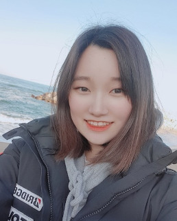
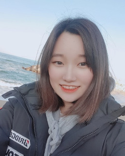

toring pro mentor
 

김태경 멘토님 (여)
고려대학교 미디어학부
동기 부여 멘토링
미디어학과 전문 멘토링
1회 (90분)
149,000원 99,000원
4+1회 (1달)
596,000원396,000원
멘토링 가능 지역:
강서구, 마포구, 영등포구, 고려대
멘토링 불만족시 100% 무료 멘토 변경
미디어학부 특기자 전형
2018
국어/수학/영어/생활윤리/사회문화
명덕외고 (영어과)
멘토링 가능, 영어 과외 가능
2018년 명덕외고 요청으로 진로 및 입시 관련 강연
고려대학교 tv 방송국 KTN에서 기획 교육/CG, 모션 그래픽(에프터
이펙트) 교육/디자인 교육 전반을 담당, 교육자료 제작
고등학교 시절 친구들의 자소서를 상당수 첨삭, 자소서 첨삭으로
인기가 좋았음, 물론 본인이 자소서를 봐준 것과 대학 진학 간의
명확한 인과관계를 설명할 수는 없지만, 집중적으로 봐준 친구 5명은
각각 서울대, 고대, 연대 등 원하는 대학, 원하는 과에 진학
멘토링과 크게 관련 있는 건 아니지만, 제 어필을 할 겸 좀 특이한
이야기를 들려드리자면, 저는 팬을 가지고 있습니다. 네, 아이돌한테
붙는 그 팬(fan)이요.
처음 시작은 중학교 때였습니다. 솔직히 아직까지도 그 친구가 정확히 저의 뭐에 꽂혔는지는 알 수 없지만, 어쨌든 당시 방송부의 한 후배가 저의 1호 팬이 되기를 자청했습니다. 고등학교 때에는, 오케스트라 동아리에서 같은 플룻 파트를 맡았던 후배가 처음에는 제 플룻 연주에 지대한 흥미를 보이더니, 그 다음 동아리 발표회에서 제가 감독한 영화를 보고 그대로 팬이 되었고요. 또 동아리 발표날 같은 영화를 본 제 룸메이트는 두 시간동안 제 영화에 대한 감상을 늘어놓기도 했습니다. 대학 들어와서 한 동기 언니는 제 영화 상영회에 참석한 뒤에, 언니가 나중에 돈 많이 벌어서 네 영화에 투자하겠다고 말하기도 했습니다.
단순한 친구, 선배라고 하기에는, 이 사람들은 직접적으로 ‘팬’이 되기를 자청했습니다. 그리고 사실, 그들이 보내는 응원과 애정은, 보통의 다른 가족이나 친구가 보내는 응원과는 결이 달랐습니다. 저라는 인간에 대한 친근함도 있지만, 그보다 더 중요한 건 저의 능력, 재능, 사회적인 관계, 그리고 결정적으로는, 제가 만드는 작품들과 관련된 것이었으니까요.
사실상 영화나 영상을 만들면, 정말 수많은 사람들을 만나게 됩니다. 그리고 그만큼, 특별하고 재미있는 경험들도 쌓이게 됩니다. 본인만의 ‘특별한 이야기’를 말하라고 할 때, 그 많은 다른 이야기들을 제치고 이 이야기를 꺼내는 이유는, 그런 팬들의 존재야 말로 저의 특별한 경험들을, 그리고 저의 매력을 총망라해 설명해줄 수 있다고 생각했기 때문입니다. 가족, 친구, 연인이 아닌, ‘팬’을 가져봤다는 건 상당히 특별한 경험이라고 생각합니다.
처음 시작은 중학교 때였습니다. 솔직히 아직까지도 그 친구가 정확히 저의 뭐에 꽂혔는지는 알 수 없지만, 어쨌든 당시 방송부의 한 후배가 저의 1호 팬이 되기를 자청했습니다. 고등학교 때에는, 오케스트라 동아리에서 같은 플룻 파트를 맡았던 후배가 처음에는 제 플룻 연주에 지대한 흥미를 보이더니, 그 다음 동아리 발표회에서 제가 감독한 영화를 보고 그대로 팬이 되었고요. 또 동아리 발표날 같은 영화를 본 제 룸메이트는 두 시간동안 제 영화에 대한 감상을 늘어놓기도 했습니다. 대학 들어와서 한 동기 언니는 제 영화 상영회에 참석한 뒤에, 언니가 나중에 돈 많이 벌어서 네 영화에 투자하겠다고 말하기도 했습니다.
단순한 친구, 선배라고 하기에는, 이 사람들은 직접적으로 ‘팬’이 되기를 자청했습니다. 그리고 사실, 그들이 보내는 응원과 애정은, 보통의 다른 가족이나 친구가 보내는 응원과는 결이 달랐습니다. 저라는 인간에 대한 친근함도 있지만, 그보다 더 중요한 건 저의 능력, 재능, 사회적인 관계, 그리고 결정적으로는, 제가 만드는 작품들과 관련된 것이었으니까요.
사실상 영화나 영상을 만들면, 정말 수많은 사람들을 만나게 됩니다. 그리고 그만큼, 특별하고 재미있는 경험들도 쌓이게 됩니다. 본인만의 ‘특별한 이야기’를 말하라고 할 때, 그 많은 다른 이야기들을 제치고 이 이야기를 꺼내는 이유는, 그런 팬들의 존재야 말로 저의 특별한 경험들을, 그리고 저의 매력을 총망라해 설명해줄 수 있다고 생각했기 때문입니다. 가족, 친구, 연인이 아닌, ‘팬’을 가져봤다는 건 상당히 특별한 경험이라고 생각합니다.
제가 멘토링에서 가장 특화된 부분은 우선 영상 관련한 내용(기획, 촬영,
편집 등)과, 동기부여, 학습법, 진로 등을 총괄할 수 있는 ‘자기 성찰’과
관련된 부분입니다.
저는 중학교 2학년 때, 제 인생의 계획을 확실하게 잡아야겠다는 생각으로 겨울방학 내내 집에 틀어박혀 진로탐색을 했습니다. 그리고 그 결과, 영상, 영화라는 진로를 명확하게 잡을 수 있었죠. 그 이후부터 남은 중학교 1년, 고등학교 3년, 그리고 지금 대학교 2년까지, 흔들림없이 꿈을 향해 달려왔습니다.
흔들림 없는 꿈을 가진 사람만이, 명문대에 가거나, 성공할 수 있는 건 아닙니다. 제 고교시절 친구들만 봐도, 후에 명문대에 진학한 많은 친구들 대부분은 명확한 목표를 가지고 있지 않았습니다.
다만 제가 중요하게 여긴 건, 자기성찰에 대한 것입니다. 단순하게는 내가 무엇을 좋아하고, 무엇을 싫어하냐부터, 더 나아가 무엇에 약하고, 무엇에 강한지 알게 된다면, 아무것도 모른 상태보다 훨씬 빠르게 발전할 수 있으니까요.
저는 중학교때 전과목 학원을 다니다가, 고등학교 진학 후에는 모든 학원을 그만뒀습니다. 그리고 첫 모의고사에서 수학 3등급, 내신에서 수학 5등급을 맞았죠. 다른 과목들도 처참하기는 마찬가지라, 첫 중간고사에서 종합 내신 4등급을 맞았습니다.
왜인지는 모르겠지만 당시 담임 선생님께서, 저는 당연히 더 성적을 올릴 거라는 신뢰를 보여주셨습니다. 덕분에 잠깐 무너질 뻔 한 걸 추스리고, 차근차근 저에 대해 생각해봤습니다. 그리고공부 방법을 바꿨죠. 저는 그 다음 모의고사에서 수학 96점 1등급을 받았고, 기말고사에서는 종합내신 2.7 등급을 받았습니다. 외고에서 그만큼 성적을 확 올린 경우는 드물었기 때문에, 특별한 사례로 소개되기도 했습니다.
저는 그때 제가 어떻게 공부하는지에 대해 곰곰히 생각했습니다. 그 결과 이전의 제 문제점은, 답지를 너무 빨리 본다는 것이었죠. 그 문제를 개선하기 위해서 저는 우선 답지를 다른 곳에 옮겼습니다. 그리고 문제를 풀고, 채점해서 틀린 건 다시 풀었습니다. 또 틀리면, 다시 풀었고, 또 틀리면, 또 다시 풀었습니다. 너무 답이 안나온다 싶으면, 보통은 풀이를 보지만, 저는 그때도 답지를 보지 않고 그냥 우선 다른 과목을 공부했습니다. 그리고는 다시 그 문제를 풀었죠. 기초부터 어려운 난이도까지, 총 4권의 문제집을 그렇게 풀었습니다. 4권은 사실 많은 양은 아니었지만, 그건 신경쓰지 않았습니다. 열 번이든, 스무 번이든, ‘풀이를 보지 않고 푸는 것’에만 집중해 네 권의 문제집을 다 풀고 나니, 문제 푸는 능력을 되찾을 수 있었습니다.
진득하게 공부했고, 그 결과 성적이 오르는 게 당연한거라고 하실수도 있지만, 저는 그 전의 자기성찰이야말로 중요한 부분이었다고 생각합니다. 만약 제가 그런 성찰없이, 그저 더 많은 문제집을 사와, 똑 같은 방법으로 문제를 풀었다면, 들이는 시간이 더 많았더라도 성적은 전혀 오르지 않았을 것입니다.
저는 이런 자기성찰 역시, 연습이 필요한 문제라고 생각합니다. 개인적으로 저는 제 부모님과, 제 친구들과, 선생님들과 제 자신에 대한 이야기를 많이 나누는 편입니다. 진로를 정하겠다는 일념으로 저 자신만을 몇 달 동안 파고든 경험도 있고요. 제 주변의 친구들은 진로를 빨리 찾은 저를 몹시 부러워했습니다. 하지만 제가 그런 친구들이나, 혹은 후배들에게 늘상 말했던 것은, 진로를 찾는 것 역시 진득한 시간과 노력이 필요하다는 것입니다. 내가 누구인지에 대한 깊이 있는 성찰을 할 때에 자신의 진로가 서서히 드러나는 것이지, 벼락 떨어지듯 별안간 확 꿈이 생기는 게 아니니까요.
자신의 공부법, 진로, 앞으로의 계획, 사회 생활과 인간관계에서까지도. 자기 성찰을 중요한 역할을 합니다. 내가 어떤 성격의 사람인지 아는 것, 그것이 동기부여나, 공부법 조정, 입시 등의 여러 문제들에 있어 선행되어야 한다고 생각합니다. 자기 성찰은 본인만이 할 수 있는 것이지만, 그것이 몹시 낯설고 힘들 때, 제가 도움을 줄 수 있습니다. 저는 자기성찰이 연습이 되고, 그걸 기반으로 본인의 공부법을 발견하고, 결론적으로는 본인의 꿈을 발견할 수 있도록 멘토링하겠습니다.
저는 중학교 2학년 때, 제 인생의 계획을 확실하게 잡아야겠다는 생각으로 겨울방학 내내 집에 틀어박혀 진로탐색을 했습니다. 그리고 그 결과, 영상, 영화라는 진로를 명확하게 잡을 수 있었죠. 그 이후부터 남은 중학교 1년, 고등학교 3년, 그리고 지금 대학교 2년까지, 흔들림없이 꿈을 향해 달려왔습니다.
흔들림 없는 꿈을 가진 사람만이, 명문대에 가거나, 성공할 수 있는 건 아닙니다. 제 고교시절 친구들만 봐도, 후에 명문대에 진학한 많은 친구들 대부분은 명확한 목표를 가지고 있지 않았습니다.
다만 제가 중요하게 여긴 건, 자기성찰에 대한 것입니다. 단순하게는 내가 무엇을 좋아하고, 무엇을 싫어하냐부터, 더 나아가 무엇에 약하고, 무엇에 강한지 알게 된다면, 아무것도 모른 상태보다 훨씬 빠르게 발전할 수 있으니까요.
저는 중학교때 전과목 학원을 다니다가, 고등학교 진학 후에는 모든 학원을 그만뒀습니다. 그리고 첫 모의고사에서 수학 3등급, 내신에서 수학 5등급을 맞았죠. 다른 과목들도 처참하기는 마찬가지라, 첫 중간고사에서 종합 내신 4등급을 맞았습니다.
왜인지는 모르겠지만 당시 담임 선생님께서, 저는 당연히 더 성적을 올릴 거라는 신뢰를 보여주셨습니다. 덕분에 잠깐 무너질 뻔 한 걸 추스리고, 차근차근 저에 대해 생각해봤습니다. 그리고공부 방법을 바꿨죠. 저는 그 다음 모의고사에서 수학 96점 1등급을 받았고, 기말고사에서는 종합내신 2.7 등급을 받았습니다. 외고에서 그만큼 성적을 확 올린 경우는 드물었기 때문에, 특별한 사례로 소개되기도 했습니다.
저는 그때 제가 어떻게 공부하는지에 대해 곰곰히 생각했습니다. 그 결과 이전의 제 문제점은, 답지를 너무 빨리 본다는 것이었죠. 그 문제를 개선하기 위해서 저는 우선 답지를 다른 곳에 옮겼습니다. 그리고 문제를 풀고, 채점해서 틀린 건 다시 풀었습니다. 또 틀리면, 다시 풀었고, 또 틀리면, 또 다시 풀었습니다. 너무 답이 안나온다 싶으면, 보통은 풀이를 보지만, 저는 그때도 답지를 보지 않고 그냥 우선 다른 과목을 공부했습니다. 그리고는 다시 그 문제를 풀었죠. 기초부터 어려운 난이도까지, 총 4권의 문제집을 그렇게 풀었습니다. 4권은 사실 많은 양은 아니었지만, 그건 신경쓰지 않았습니다. 열 번이든, 스무 번이든, ‘풀이를 보지 않고 푸는 것’에만 집중해 네 권의 문제집을 다 풀고 나니, 문제 푸는 능력을 되찾을 수 있었습니다.
진득하게 공부했고, 그 결과 성적이 오르는 게 당연한거라고 하실수도 있지만, 저는 그 전의 자기성찰이야말로 중요한 부분이었다고 생각합니다. 만약 제가 그런 성찰없이, 그저 더 많은 문제집을 사와, 똑 같은 방법으로 문제를 풀었다면, 들이는 시간이 더 많았더라도 성적은 전혀 오르지 않았을 것입니다.
저는 이런 자기성찰 역시, 연습이 필요한 문제라고 생각합니다. 개인적으로 저는 제 부모님과, 제 친구들과, 선생님들과 제 자신에 대한 이야기를 많이 나누는 편입니다. 진로를 정하겠다는 일념으로 저 자신만을 몇 달 동안 파고든 경험도 있고요. 제 주변의 친구들은 진로를 빨리 찾은 저를 몹시 부러워했습니다. 하지만 제가 그런 친구들이나, 혹은 후배들에게 늘상 말했던 것은, 진로를 찾는 것 역시 진득한 시간과 노력이 필요하다는 것입니다. 내가 누구인지에 대한 깊이 있는 성찰을 할 때에 자신의 진로가 서서히 드러나는 것이지, 벼락 떨어지듯 별안간 확 꿈이 생기는 게 아니니까요.
자신의 공부법, 진로, 앞으로의 계획, 사회 생활과 인간관계에서까지도. 자기 성찰을 중요한 역할을 합니다. 내가 어떤 성격의 사람인지 아는 것, 그것이 동기부여나, 공부법 조정, 입시 등의 여러 문제들에 있어 선행되어야 한다고 생각합니다. 자기 성찰은 본인만이 할 수 있는 것이지만, 그것이 몹시 낯설고 힘들 때, 제가 도움을 줄 수 있습니다. 저는 자기성찰이 연습이 되고, 그걸 기반으로 본인의 공부법을 발견하고, 결론적으로는 본인의 꿈을 발견할 수 있도록 멘토링하겠습니다.